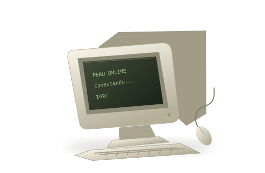
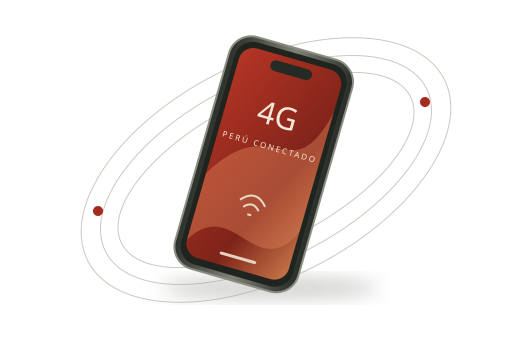

BEHIND THE CONNECTION
A network is made
of people.
Technology tells only half the story. Where we connect, what we can afford, and the geography around us all shape the experience of being online.
Explore the access gap ↓
01 / LA CABINA PÚBLICASHARED SCREENS
The web, by
the hour.
For people without a computer or a home connection, a public internet booth offered another way online. In November 1997, the Inter-American Development Bank described Peru’s cabinas as a model of shared access supported by the Red Científica Peruana.
These were physical places to use a global network. Their significance was not just the equipment: sharing the cost of computers and connectivity made access possible beyond individual households.
Access could begin with a shared computer, rather than a connection of your own.
Source: IDB, November 1997 ↗
02 / DEL ESCRITORIO AL BOLSILLOA MOBILE COUNTRY
From a place
to a possibility.
Fixed broadband and mobile networks brought different forms of access. Telefónica del Perú’s 2002 annual report documents its Speedy ADSL service. ADSL carried data over existing telephone lines, helping make always-on access an alternative to dial-up.
In 2013, Peru awarded spectrum for 4G LTE. A spectrum award and a service launch are different milestones: Telefónica’s 2013 report listed 4G pre-sales for service scheduled from 2 January 2014. This transition expanded the possibilities for access away from a desk. Read the company report ↗
Explore the network milestones ↗03 / THE LAST MILE
One country.
Uneven access.
National averages hide geographic differences. These figures compare the same measure, from the same survey period: households with internet service in October–December 2025.
THE NEXT CHAPTER
Getting online is
only the beginning.
The history continues in the quality of the connection, the skills to use it, and the opportunities it makes possible. A fuller history asks who is still missing from the network.
Look into the research
The gap between Lima
and rural households.
Percentage points compare the two shares directly: 78.2% minus 23.4%. The chart does not measure speed, reliability, affordability or whether every person in a household goes online.
Fibre backbones and rural mobile initiatives address parts of the access problem. Infrastructure alone does not tell us whether a connection is affordable or useful.
Trace the rural infrastructure story ↗